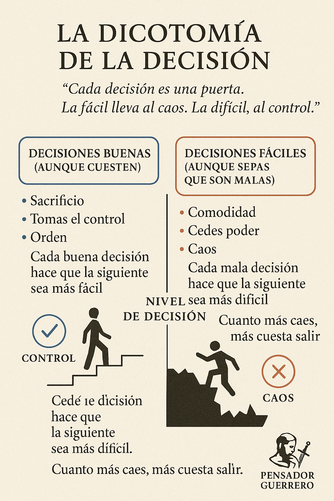

Cada decisión es una bifurcación: lo fácil conduce al caos, lo correcto al control.
Si tomas decisiones difíciles pero correctas, avanzas hacia el orden. Si eliges lo cómodo pero erróneo, acabas en un pozo del que cada vez es más difícil salir.
⚔️ Clave del pensador guerrero: “Si hoy eliges el esfuerzo, mañana eliges libertad.”
